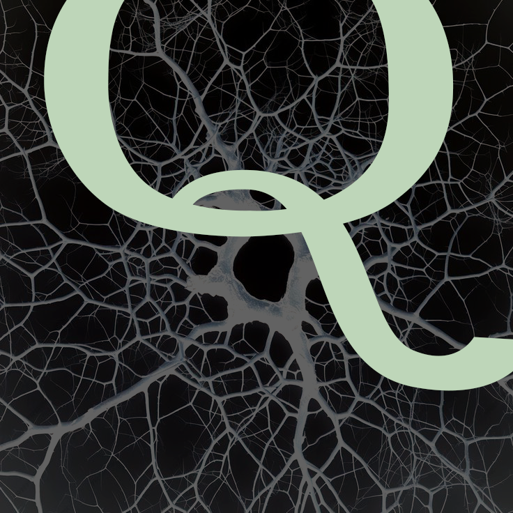
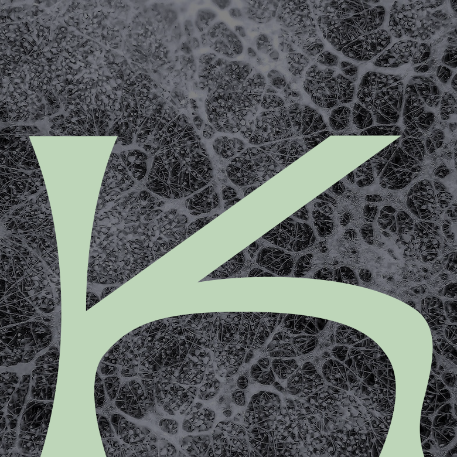

“Entangled Life,” first book by author Merlin Sheldrake, takes a deep dive into the science and fascination of fungus, and in the telling, makes it fun to read.
This well-written and well-researched book clearly demonstrates just how essential fungi are within the world that we live in, and mycophiles of all persuasions will find much to like within its pages.
Sheldrake is a scientist who obtained his PhD in tropical ecology from the University of Cambridge. He is a musician (there are a number of musical analogies within these pages), brewer (the lowly yeasts stimulated his first love for fungi) and son of Rupert Sheldrake, the famous parapsychologist who developed the hypothesis of morphic resonance. It is safe to say that young Merlin was steeped in both the natural world and the permeability of its boundaries from a very early age. He retains a sense of wonder and a deep curiosity about the realities and the mysteries of fungi, all tempered by his rigorous scientific training. Sheldrake stitches his extensive personal experiences with all matters mycological into a broad tapestry of science and narrative, presenting both historical and modern day mycological theories.
Chapters discuss how fungi and plants first cooperated to move onto land, and speculate upon just what was that giant organism of the Devonian, Prototaxites (spoiler alert: Merlin is in the lichen camp). He provides referenced narratives on how fungi communicate and “make decisions.” There is a richly detailed chapter on our broadening understanding of what dynamic systems lichens actually are, equating them to worlds in and of themselves. Engaging stories are told about the personalities and abilities of truffle hunting dogs in Italy, and the powerfully pungent chemicals that lure truffle spore dispersers. Other chapters delve into the morbidly fascinating Cordyceps species, and their abilities to commandeer the nervous systems of insects for their own devices. The breadth and depth of these topics and more truly brings home the author’s point that fungi underlie everything.
Like many of you, I consider myself fairly well informed on most of these mycological topics, yet I still found Sheldrake’s mycological journey and analyses both entertaining and enlightening. I liked how Sheldrake drew from a rich trove of prior mycological research, not just citing it, but analyzing it too, in a modern context. Many of his musings were deepened and sometimes even contradicted by footnotes, because science is messy and imprecise, and there is so much we don’t know. In fact, in my advance copy of this book, almost ¼ of the pages were composed of footnotes and references. Sheldrake does not just want you to take his word for it. He wants you to think. My kinda guy.
The book was peppered with clever pull-quotes by prominent scientists and laypersons alike, making for some memorable reading. One researcher referred to Cordyceps infected ants as ”Fungi in ant’s clothing.” A psychiatrist working at Johns Hopkins on psilocybe therapy said of that potent entheogen: “psilocybin … dope slaps people out of their story. It’s literally a reboot of the system.” Sheldrake came up with his own quotable quote, in referring to the amorphousness of the true fungal body (hint: not a mushroom): “Mycelia is a body without a body plan.” True dat.
Sheldrake did his PhD research in tropical forests in Panama, attempting to tease out the connections between fungi and plants. In that complicated, humid, wild, vibrant and incredibly messy landscape, it was far from easy. In particular, he looked at a curious local mycoheterotroph, an achlorophyllous gentian called Voyria. Like for all “mycohets” (an abbreviation he coined), it obtains its sugars via a fungus hooked up to a plant. He discovered that it was almost impossible to study it as a living system, once it had been severed from the deep ecological connections that made it what it was.
Sheldrake emphasizes time and again that all of these fungal systems are complicated, and that there is still much that we don’t know. He turns a empathetically critical eye on the so called Wood Wide Web, not just illuminating and citing the original research, but also advising caution around concepts such as “intention” in trees. Are the chemical signals given by trees and passed along mycelial highways deliberate or passive? Clearly, we don’t know.
Sheldrake also gives credit to the non-academics driving modern mycology: people like Paul Stamets and Peter McCoy and the fungal company Ecovative, which uses fungal material for the ultimate bio-degradable packaging, and creates vegan-friendly fungal leather. Of course he touches on hot topics like bioremediation, but as he rightly states, these technologies are in their infancy, and whether they can be scaled up to work in large natural landscapes remains to be seen.
Fungi push envelopes in many ways. One lichen researcher, David Griffiths, came up with the “Queer theory for lichens.” Sheldrake states: ”Its author argues that lichens are queer beings that present ways for humans to think beyond a rigid binary framework. The identity of a lichen is a question, rather than a known answer.”